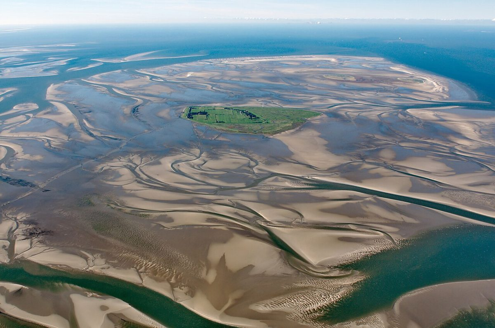

Nordsee Wattenmeer: Naturwunder und Urlaubsparadies in Deutschland

Das Wattenmeer an der Nordsee ist eines der beeindruckendsten Naturwunder Deutschlands und UNESCO-Weltnaturerbe. Diese einzigartige Landschaft aus Watt, Salzwiesen und Dünen bietet unvergessliche Erlebnisse für Naturliebhaber und Erholungssuchende. Hier findest du alles, was du für einen perfekten Trip ans Wattenmeer wissen musst.
Anreise ans Wattenmeer
Das norddeutsche Wattenmeer erstreckt sich von den Niederlanden bis nach Dänemark. Die bekanntesten deutschen Zugangsorte sind die ostfriesischen Inseln wie Norderney oder Langeoog, die Nordfriesischen Inseln mit Sylt und Föhr sowie das Festland mit Städten wie Cuxhaven oder Husum. Per Auto bist du über die A23 oder A7 gut angebunden. Alternativ bringen dich Züge direkt in viele Küstenorte, ab dort verkehren Fähren zu den Inseln.
Beste Reisezeit
Das Watt zeigt zu jeder Jahreszeit seinen Reiz, aber besonders empfehlenswert ist die Zeit von Mai bis September. Dann sind die Temperaturen angenehm für Wattwanderungen und die Vogelwelt besonders aktiv. Wer die spektakulären, einsamen Winterlandschaften liebt, sollte zwischen November und Februar kommen – dabei beachten: einige touristische Angebote sind dann eingeschränkt.
Top 4 Highlights im Wattenmeer
1. Geführte Wattwanderungen: Mit kundigen Wattführern das UNESCO-Weltnaturerbe erkunden – ein Muss! Besonders beliebt sind Touren zum „Juister Knochen“, einem Walknochen, oder zur Insel Neuwerk.
2. Seehundbänke besuchen: Bei einer Bootstour zu den Sandbänken kannst du die niedlichen Bewohner des Watts in freier Wildbahn beobachten.
3. Nationalpark-Häuser besuchen: Multimediale Ausstellungen wie das UNESCO Weltnaturerbe Wattenmeer Besucherzentrum in Wilhelmshaven erklären die einzigartige Tier- und Pflanzenwelt perfekt.
4. Sonnenuntergang im Watt: Kaum etwas ist magischer als die untergehende Sonne über der scheinbar endlosen Wattfläche zu erleben.
Kulinarische Highlights
1. Frischer Austernschmaus: Die Nordseeküste ist bekannt für ihre exzellenten Austern – probiere sie am besten direkt an der Küste.
2. Labskaus: Dieses deftige Seefahrergericht aus Corned Beef, Rote Bete und Kartoffeln ist ein Klassiker.
3. Grünkohl mit Pinkel: Im Winter ist dieses norddeutsche Traditionsgericht ein muss – meist mit einer deftigen Wurst serviert.
4. Frischer Krabbensalat: Die kleinen Nordseekrabben schmecken besonders lecker in einem leichten Salat mit Dill und Apfel.
Das Wattenmeer ist ein Ort der Ruhe und gleichzeitig voller Leben. Ob du wandern, Tiere beobachten oder einfach nur tief durchatmen möchtest – hier findest du garantiert dein perfektes Nordsee-Erlebnis.
Haiktec
- Effiziente Selbstorganisation für Freelancer: 7 Schritte zu mehr Produktivität und weniger Stress
- Ostsee & Nordsee Reisebudget-Tracker & Planer für Selbstständige: Professionelle Excel-Vorlage mit automatischer Summenberechnung & Ausgabenkategorisierung (2026 Edition)
- Hochzeitsbudget-Tracker & Planer für perfekte Planung
Text mit KI erstellt und automatisch geprueft.